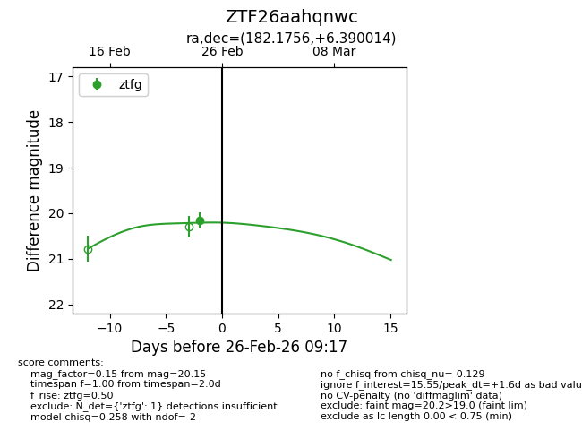
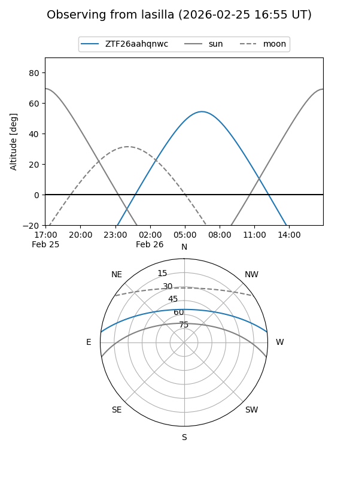
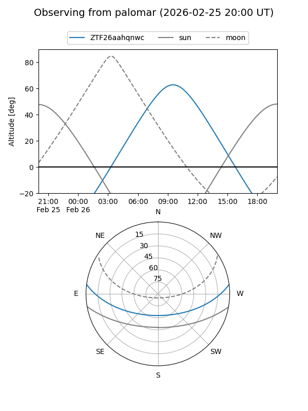
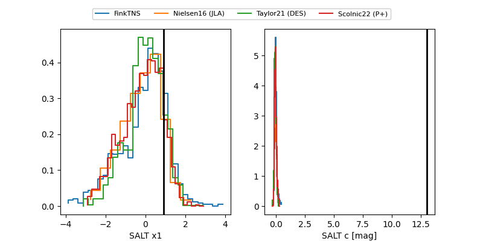

ZTF26aahqnwc
Target ZTF26aahqnwc at 2026-02-26 09:18
Aliases and brokers:
FINK: link
Lasair: link
ALeRCE: link
alt names
ZTF26aahqnwc (ztf,fink_ztf)
Coordinates:
equatorial (ra, dec) = 182.1756,+6.39001
equatorial (HMS+DMS) = 12:08:42.14,+06:23:24.05
galactic (l, b) = (274.9142,+66.90793)
Flags:
Photometry:
last ztfg=20.15
1 ztfg detections
Lightcurve

Visibility


Additional plots
